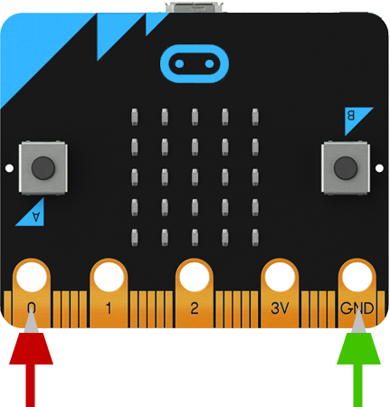

Micro:bit
Qu’est-ce que c’est?

Utilise les flèches du clavier pour faire défiler le diaporama. N'hésite pas à poser des questions à l'animateur !
Micro:bit
C’est un micro-ordinateur à qui on peut donner des instructions.
Micro:bit
Il est tout petit, mais on peut lui faire exécuter plein de choses.
Micro:bit
Tout au long de ton aventure sur l’île de {ROBOT_NAME}, tu auras la chance de t’amuser avec Micro:Bit.
Voici à quoi il ressemble
Il y a des lumières que tu peux programmer
Les 2 boutons sont là pour que tu puisses faire des actions
Tu peux même faire des branchements
Voici ce qu'il y a au dos
Il y a la prise USB pour le brancher sur l'ordinateur
Voici un bouton très important. Il permet de redémarrer le micro:bit
Cet prise sert à brancher la batterie pour qu'il puisse fonctionner
Voici ce que tu dois faire :
- Appuie sur le bouton A (celui de gauche)
- Appuie sur le bouton B (celui de droite)
- Appuie sur les 2 bouton en même temps
- Secoue doucement le micro:bit
Voilà pour le moment

Clique sur le bouton SUIVANT en haut pour continuer